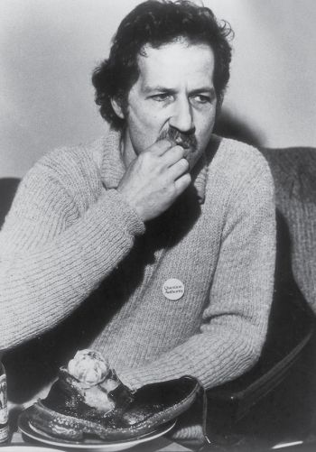

Chaussures Confit

After losing a bet to Erol Morris, Werner Herzog eats his shoe.
The importance of having a good shoe Herzog takes to heart. Herzog once walked from Munich to Paris in the dead of the winter. It is unclear where the shoes used for this stew had been walked in but one thing is clear; they were very well worn and no doubt added to the flavor of the stew. What follows is a shoe stew as concocted by Werner Herzog and chef Alice Waters.
Ingredients
- 1 well worn, ankle height suede shoes
- 2 heads of garlic
- 4 red onions
- 1 bunch of fresh parsley
- 1 bunch fresh rosemary
- hot sauce
- warm duck fat
- 1 tablespoon salt
Steps
- Clean shoes with suede brush (microfiber will do if suede brush is unavailable)
- Stuff each shoe with 1 head of garlic, 1 coarsely chopped red onion and half of the parsley
- Tie laces together for a firm fit
- Place shoes in a large stainless steel pot
- Add equal parts duck fat and cold water, enough to cover the shoes
- Add rosemary on top and hot sauce to preference (generous amount is recommended
- Salt to taste
- Bring water to a boil then turn down to a simmer
- Cook for five hours, replacing evaporated liquid with equal parts water and duck fat
Home